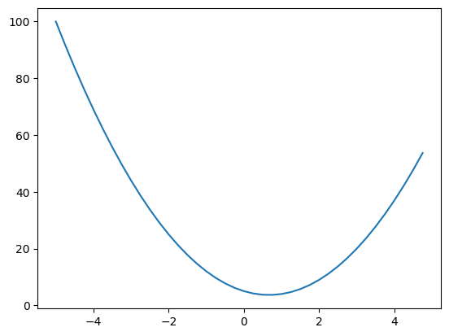
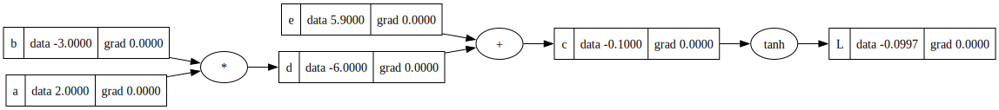
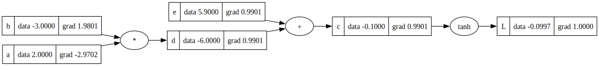
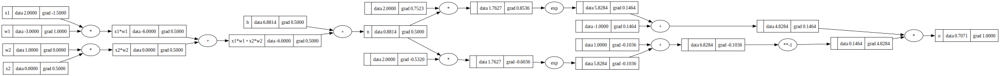
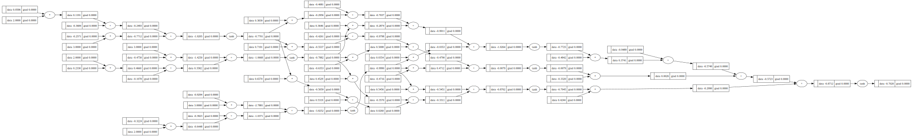
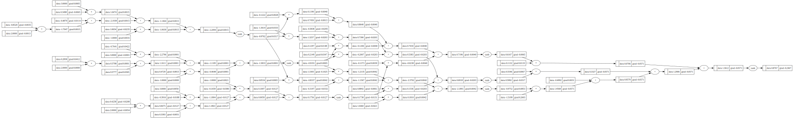

import math
import numpy as np
import matplotlib.pyplot as plt
%matplotlib inlineGradients Bootcamp
This notebook was creating while following Andrej Karparthy’s YouTube content (thank you).
Recreation of the ‘micrograd’ library.
It creates a generalized, simple framework for composing compound functions, basic neural networks, manage forward and backwards passes, gradient decent, and model training.
Basic Quadratic Example
In this first example, we explore a basic quadratic function and empirically calculate derivatives.
# basic quadratic
def f(x):
return 3*x**2 - 4*x + 5
f(3.0)20.0# plotting
xs = np.arange(-5, 5, 0.25)
ys = f(xs)
plt.plot(xs, ys)
# empirical derivative calculation at specific point
h = 0.0000000001
x = 3.0
(f(x+h)-f(x))/h14.000001158365194# partial derivative example
h = 0.000001
a = 2.0
b = -3.0
c = 10.0
d1 = a*b + c
a += h
d2 = a*b + c
print('d1', d1)
print('d2', d2)
print('slope', (d2-d1)/h)d1 4.0
d2 3.9999969999999996
slope -3.000000000419334Building The “Value” Object
Creating a class to represent each ‘node’ or element in a function (or network)
- The value class will serve as the primary object for nodes in the network
- A node is an object defined by a value and relationship to other nodes
- Each operation must have a clearly defined way to calculate and back-propogate
- Each node needs knowledge of it’s ‘creating’ nodes and the operation used to create
# defining basic value object and operations for forward and backward prop
class Value:
# the value class will serve as the primary object for nodes in the network
# a node is an object defined by a value and relationship to other nodes
# each operation must have a clearly defined way to calculate and back-propogate
# each node needs knowledge of it's 'creating' nodes and the operation used to create
def __init__(self, data, _children=(), _op='', label=''):
# define data value; as well as gradient, a 'back-prop' function, child nodes, operation, and label
self.data = data
self.grad = 0.0
self._backward = lambda: None
self._prev = set(_children)
self._op = _op
self.label = label
def __repr__(self):
# print 'meaningful' representation of object when using notebook
return f"Value(data={self.data})"
def __add__(self, other):
# define addition and return reference Value objects and operator
other = other if isinstance(other, Value) else Value(other)
out = Value(self.data + other.data, (self, other), '+')
# define 'backward pass' gradient definitions based on chain rule
## note += ...this accounts for multiple uses of a node in a network
## we want to avoid 'overwriting' the gradient if two nodes back propogate to the same child
## chain rule with multivariate data allows for the addition of gradients in this case
def _backward():
self.grad += 1.0 * out.grad
other.grad += 1.0 * out.grad
out._backward = _backward
return out
def __neg__(self):
return self * -1
def __sub__(self, other):
return self + (-other)
def __mul__(self, other):
# define multiply and return reference Value objects and operator
other = other if isinstance(other, Value) else Value(other)
out = Value(self.data * other.data, (self, other), '*')
# define gradients based on chain rule
def _backward():
self.grad += other.data * out.grad
other.grad += self.data * out.grad
out._backward = _backward
return out
def __pow__(self, other):
assert isinstance(other, (int, float)), "only supporting int/float powers for now"
out = Value(self.data**other, (self, ), f'**{other}')
def _backward():
self.grad += other * self.data**(other-1.0) * out.grad
out._backward = _backward
return out
def __truediv__(self, other):
return self * other**-1
def __rmul__(self, other): # other * self
return self * other
def __radd__(self, other):
return self + other
def exp(self):
x = self.data
out = Value(math.exp(x), (self, ), 'exp')
def _backward():
# e**x is local derivative of e**x
self.grad += out.data * out.grad
out._backward = _backward
return out
def tanh(self):
# define tanh (e**2x - 1) / (e**2x + 1) === -1 to 1 range squish
x = self.data
t = (math.exp(2*x)-1)/(math.exp(2*x)+1)
out = Value(t, (self, ), 'tanh')
def _backward():
# looked this shit up - derivative of tanh
# could be derived with basic calculus -- will do later
self.grad += (1 - t**2) * out.grad
out._backward = _backward
return out
def backward(self):
# we first build a topography - an ordered list of the parent > child chains
topo=[]
visited = set()
def build_topo(v):
if v not in visited:
visited.add(v)
for child in v._prev:
# recursive through the children
build_topo(child)
# at bottom of trace, start appending
topo.append(v)
build_topo(self)
# set initial gradient of final output node L: dL/dL (always 1)
self.grad = 1.0
for node in reversed(topo):
# execute the 'backward' functions for each node to calculate gradients from top to bottom
node._backward()
a = Value(2.0, label='a')
b = Value(-3.0, label='b')
d = a*b; d.label='d'
c = d + Value(5.9, label='e'); c.label ='c'
L = c.tanh(); L.label = 'L'c._prev{Value(data=-6.0), Value(data=5.9)}c._op'+'# visualization using graphviz api for node inputs
pathadd = "C:/Program Files/Graphviz/bin/"
import os
os.environ["PATH"] += os.pathsep + pathadd
from graphviz import Digraph
def trace(root):
nodes, edges = set(), set()
def build(v):
if v not in nodes:
nodes.add(v)
for child in v._prev:
edges.add((child, v))
build(child)
build(root)
return nodes, edges
def draw_dot(root):
dot = Digraph(format='svg', graph_attr={'rankdir': 'LR'})
nodes, edges = trace(root)
for n in nodes:
uid = str(id(n))
dot.node(name=uid, label="{ %s | data %.4f | grad %.4f }" % (n.label, n.data, n.grad, ), shape='record')
if n._op:
dot.node(name=uid + n._op, label = n._op)
dot.edge(uid + n._op, uid)
for n1, n2 in edges:
dot.edge(str(id(n1)), str(id(n2)) + n2._op)
return dotdraw_dot(L)
L.backward()draw_dot(L)
x1 = Value(2.0, label='x1')
x2 = Value(0.0, label='x2')
w1 = Value(-3.0, label='w1')
w2 = Value(1.0, label='w2')
b = Value(6.8813735870195432, label='b')
x1w1 = x1*w1; x1w1.label = 'x1*w1'
x2w2 = x2*w2; x2w2.label = 'x2*w2'
x1w1x2w2 = x1w1 + x2w2; x1w1x2w2.label = 'x1*w1 + x2*w2'
n = x1w1x2w2 + b; n.label = 'n'
o = ((2*n).exp()-1)/((2*n).exp()+1); o.label = 'o'
o.backward()draw_dot(o)
Same example, now PyTorch
# pytorch representation
import torchx1 = torch.Tensor([2.0]).double(); x1.requires_grad=True
x2 = torch.Tensor([0.0]).double(); x2.requires_grad=True
w1 = torch.Tensor([-3.0]).double(); w1.requires_grad=True
w2 = torch.Tensor([1.0]).double(); w2.requires_grad=True
b = torch.Tensor([6.8813765870195432]).double(); b.requires_grad=True
# above set to 'double' to match the 2 pointer float method of python / float 64 vs 32
n = x1*w1 + x2*w2 + b
o = torch.tanh(n)
print(o.data.item())
o.backward()
print('-----')
print('x2', x2.grad.item())
print('w2', w2.grad.item())
print('x1', x1.grad.item())
print('w1', w1.grad.item())0.707108359331579
-----
x2 0.4999977681634026
w2 0.0
x1 -1.4999933044902076
w1 0.9999955363268052Basic Neural Network from our base Value class
Creating Neuron definition based on perceptron nerve model: wx + b
# basic neural network - 2 layer perceptron
import random
class Neuron:
def __init__(self, nin):
self.w = [Value(random.uniform(-1,1)) for _ in range(nin)]
self.b = Value(random.uniform(-1,1))
def __call__(self, x):
act = sum((wi*xi for wi, xi in zip(self.w, x)), self.b)
out = act.tanh()
return out
def parameters(self):
return self.w + [self.b]
class Layer:
def __init__(self, nin, nout):
self.neurons = [Neuron(nin) for _ in range(nout)]
def __call__(self, x):
outs = [n(x) for n in self.neurons]
return outs[0] if len(outs) == 1 else outs
def parameters(self):
return [p for neuron in self.neurons for p in neuron.parameters()]
x = [2.0, 3.0]
n = Neuron(2)
n(x)Value(data=0.7710059294619084)x = [2.0, 3.0]
n = Layer(2, 3)
n(x)[Value(data=-0.9955879131700199),
Value(data=-0.5097029591322493),
Value(data=0.9965281438417336)]class MLP:
def __init__(self, nin, nouts):
sz = [nin] + nouts
self.layers = [Layer(sz[i], sz[i+1]) for i in range(len(nouts))]
def __call__(self, x):
for layer in self.layers:
x = layer(x)
return x
def parameters(self):
return [p for layer in self.layers for p in layer.parameters()]
x = [2.0, 3.0, -1.0]
n = MLP(3, [4, 4, 1])
n(x)Value(data=-0.7692074529154024)y = [2.0, 3.0]
n2 = MLP(2, [3, 3, 1])
n2(x)Value(data=-0.7019997780354041)draw_dot(n2(x))
n = MLP(3, [3, 3, 1])
xs = [
[2.0, 3.0, -1.0],
[3.0, -1.0, 0.5],
[0.5, 1.0, 1.0],
[1.0, 1.0, -1.0],
]
ys = [1.0, -1.0, -1.0, 1.0] # targets# training loop for network
for k in range(20):
# forward pass
ypred = [n(x) for x in xs]
loss = sum((yout - ygt)**2 for ygt, yout in zip(ys, ypred))
# backwards pass
for p in n.parameters():
p.grad = 0.0
loss.backward()
# update
for p in n.parameters():
p.data += -0.1 * p.grad
print(k, loss.data)0 6.716117378416472
1 5.556697957977596
2 3.649244984903412
3 3.15756261040604
4 2.922059534006541
5 2.783226211789527
6 2.6630413770238532
7 2.510006135006954
8 2.240607886127641
9 1.7776929442612133
10 1.2132704181393033
11 0.7505110676829165
12 0.4528071853316977
13 0.2940499244954832
14 0.21003762632407547
15 0.1648694901876382
16 0.13508731573001465
17 0.11411403053452894
18 0.09860667977214621
19 0.08670487408481826ypred[Value(data=0.8766735146392082),
Value(data=-0.8011294912314902),
Value(data=-0.9318566380835971),
Value(data=0.8347654543920767)]draw_dot(ypred[0])